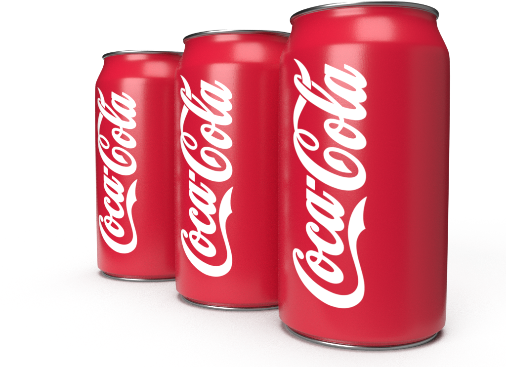

코카-콜라 레드,
하나의 약속이 되다
(코카-콜라 설립 초기부터 지금까지 변함없이 사용해 온 로고의 빨간색은 코카-콜라 브랜드만의 독특한 유산이다.)
코카-콜라는 ‘코카-콜라 레드’와 더불어 130여 년의 역사를 오늘날에 맞게 재해석하고 발전시켜 나가고 있다. 코카-콜라, 코카-콜라 제로, 코카-콜라 라이트 등 다양한 제품들이 출시되고 있지만, ‘빨간색’ 상표는 130년이라는 시간의 장벽을 넘어 변함없이 적용되고 있다.
코카-콜라는 ‘코카-콜라 레드’와 더불어 130여 년의 역사를 오늘날에 맞게 재해석하고 발전시켜 나가고 있다. 코카-콜라, 코카-콜라 제로, 코카-콜라 라이트 등 다양한 제품들이 출시되고 있지만, ‘빨간색’ 상표는 130년이라는 시간의 장벽을 넘어 변함없이 적용되고 있다.
이를 반영하듯 올해 코카-콜라 전 제품의 패키지를 레드 컬러로 통일해 브랜드 아이덴티티를 통합했다. 각자의 기호와 라이프스타일에 따라 코카-콜라의 어떤 제품을 선택하더라도 똑같은 짜릿한 ‘코카-콜라’를 마시고 있다고 생각하게 된다.
최근 전 세계적으로 전개한 ‘이 맛, 이 느낌(Taste the Feeling)’ 캠페인 역시 마찬가지다.
짜릿하고 시원한 코카-콜라로 일상이 특별해지는 느낌을 전하기 위해 기획된 이 캠페인은 130 년 넘게 변하지 않는 가치를 포용하면서 코카-콜라가 전하고자 하는 짜릿한 순간을 화보, 음악 등 현대적이고 감각적인 방식으로 표현해내고 있다.